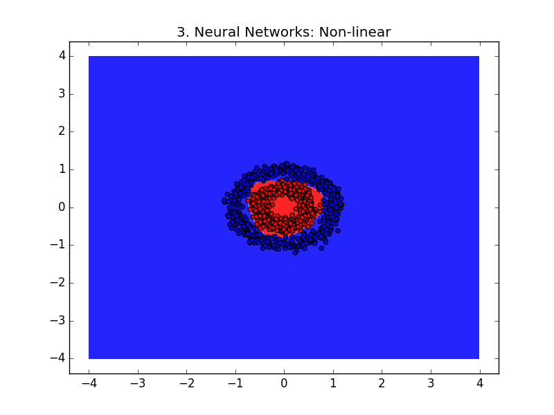

Problem Definition
The task for this programming assignment is to build and implement a logistic regression classifier as well as a neural network classifier. The logistic regression classifier is useful for plotting a decision boundary using linear data. After training, it can be used to predict future outcomes based on input data. However, logistic regression classifiers do not perform well using non-linear data. Thus, the second product for this programming assignment is to build a neural network classifier. Neural network's hidden layers allow extra weights to "curve" decision boundaries.
By the end of this assignment, one should be aware of the advantages and limitations of both logistic regression and neural network classifiers. Additionally, another problem at hand is classifiy images of digits based on training data. To do this, both classifiers should be trained and weighted properly. It should be noted that some difficulties include choosing the optimal number of nodes for a neural network and choosing an optimal learning rate.
Method and Implementation
The flow of the logistic regression classifier and neural network classifier can be summed up into three core functions: compute_cost(), fit(), and predict(). The classifier calls the fit() method, which computes the gradient depending on its current predictions and cost, given by methods compute_cost() and predict(). Method fit() then iterates, with each iteration updating the weights and recalculating the cost and until it converges (here, convergence occurs when the cost difference between each iteration is less than some predetermined value). Once the cost converges, indicating that cost is minimized and "accuracy" is maximized, the decision boundary is plotted as a function of the weights.
The neural network, however, contains one additional feature to allow it to form a non-linear decision boundary. This is implemented by adding another layer of "intermediate outputs" which are then re-weighted into the actual outputs (classifications).
Experiments
Logistic Regression
Experiment 1
Using skeleton code in LogisticRegression.py, implement compute_cost(), predict(), and fit(). Afterwards, train linear data (dataset 'Linear') and visualize the decision boundary.
Experiment 2
Use the logistic regression classifier to learn non-linear data (dataset 'Nonlinear') and visualize the decision boundary. Observe whether or not the logistic regression classifier is able to learn non-linear data. Elaborate on your results.
Neural Networks
Experiment 3
Implement a neural network class with 1 hidden layer in a separate NeuralNet.py file. Now, train this model using the dataset 'Linear' and visualize the decision boundary learned by your model. Then, train your neural network model using the dataset 'Nonlinear' and visualize the decision boundary. Explain whether or not the neural network model (with one hidden layer) can learn non-linear decision boundaries.
Experiment 4
Describe the effects of the learning rate on how your neural network is trained. Provide plots illustrating the total cost of the neural network model over time for different learning rate values.
Experiment 5
Describe the effects of the number of hidden layer nodes on how your neural network is trained. Provide plots illustrating the decision boundaries for different numbers of nodes in the hidden layer.
Digit Classification
Experiment 6
Train the Logistic Regression Classifier to classify digits using training files X_train and y_train. Then, evaluate the performance on a test set (X_test), computing the average classification accuracy along with a confusion matrix.
Experiment 7
Train the Neural Network Classifier to classify digits using training files X_train and y_train. Then, evaluate the performance on a test set (X_test), computing the average classification accuracy along with a confusion matrix. Compare this with the Logistic Regression Classifier.
Results
Logistic Regression
Experiment 1
Below, linear data is trained and visualized.
Experiment 2
Below, the logistic regression classifier attempts to learn non-linear data and visualize the decision boundary.
Answer to Question
After multiple attempts, it can be concluded that the logistic regression classifier cannot learn non-linear data. This is most likely because there are not enough incorporated weights (and only one layer of weights) to allow for curve-like boundaries.
Neural Networks
Experiment 3
Below, the neural network with one hidden layer learns linear dataset 'Linear' and visualizes the decision boundary.
Below, the neural network with one hidden layer learns non-linear data 'Nonlinear' and visualizes the decision boundary.
Answer to Question
After several trials of the neural network (with one hidden layer) learning non-linear data, it is clear that the neural network is able to learn non-linear data. I believe this is possible because of the extra layer of weights (with varying quantity depending on number of nodes). These extra weights allow the curve to be more "configurable", thus allowing for it to curve as a "function" of two inputs.
Experiment 4
Below is a plot of cost as a function of iterations (essentially time), with learning rate of 0.01.
Below is a plot of cost as a function of iterations (essentially time), with learning rate of 0.001.
Below is a plot of cost as a function of iterations (essentially time), with learning rate of 0.0001.
Answer to Question
For this neural network model, it seems that a learning rate of 0.001 is optimal. The effects of increasing learning rate by a magnitude of 10 can be seen as detrimental if too high. As seen when learning rate is 0.01, the cost starts to oscillate because it "jumps" over the minimum cost value. As a result, it never converges. On the other hand, decreasing the learning rate by a magnitude of 10 increases the convergence time by a factor of approximately 5. With a learning rate of 0.001, convergence does occur (which is necessary) and within a relatively short amount of time.
Experiment 5
Below is the visualized decision boundary of the neural network with number of nodes in the hidden layer set to 2.
Below is the visualized decision boundary of the neural network with number of nodes in the hidden layer set to 4.
Below is the visualized decision boundary of the neural network with number of nodes in the hidden layer set to 8.
Answer to Question
For this neural network model, it seems that using too few nodes such as 2 nodes doesn't train the neural network properly. The reason for this is unclear, but it is probably because there are not enough weights to properly "curve" the boundary. At 4 and 8 nodes, the boundary is properly visualized/formed, but the difference between their respective accuracies is unnoticeable. As a conclusion for this experiment, as long as enough nodes are used, the quantity does not matter. However, perhaps if the number of nodes were to increase dramatically, performance might decrease.
Digit Classification
Experiment 6
Below is the confusion matrix for the performance of the logistic regression classifier.

Answer to Question
The average classification accuracy for the logistic regression classifier is 93.5%.
Experiment 7
Below is the confusion matrix for the performance of the neural network (with one hidden layer) classifier.

Answer to Question
The average classification accuracy for the neural network (with one hidden layer) classifier is 92.5%.
Discussion
From these experiments, it can be observed that the strength of the neural network classifier is that it can decide non-linear boundaries. However, it is "weaker" when it comes to linear data in the sense that it seemingly needs more computation to decide a boundary. Additionally, the boundary seems to be less accurate, seen in the digit classification experiments.
The logistic regression classifier's strengths are its fast computation and seemingly accurate decision boundary for linear data. However, it struggles converging for some non-linear data and may never converge if the data is circular. In this specific programming assignment, the logistic regression classifier performed better than the neural network for digit classification.
Overall, the results of our neural network and logistic regression classifiers prove to be genereally successful, able to create sufficient decision boundaries (when they should be able to). The limitation of the logistic regression classifier is that it cannot perform well on non-linear data. There are currently no noticeable limitations of our neural network classifier (as it was able to perform well on all experiments). Additionally, our experiments yielded expected results. In the future, perhaps experimenting with more hidden layers for the neural network would lead to better performance.
Conclusions
To conclude,
- Neural networks can perform with non-linear while logistic regression classifiers cannot.
- Logistic regression converges faster for linear data.
- Experiments performed es expected
Credits and Bibliography
Michael Nielsen / January 2017
Title: How the Backpropagation Algorithm Works
http://neuralnetworksanddeeplearning.com/chap2.html
Date Accessed: February 20-23, 2017
Credit for discussion and work: Michael Deng, Nick Mauro, and Stephanie Hsieh.